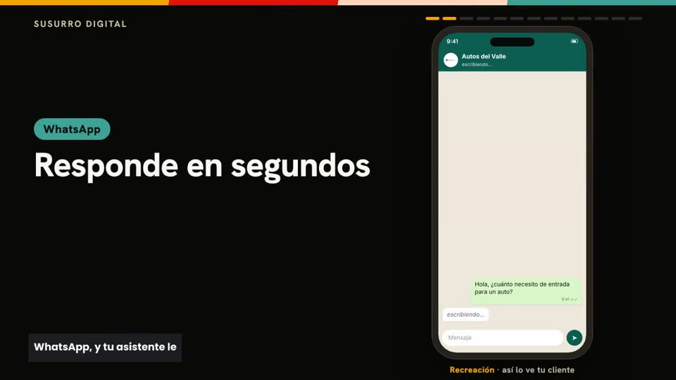
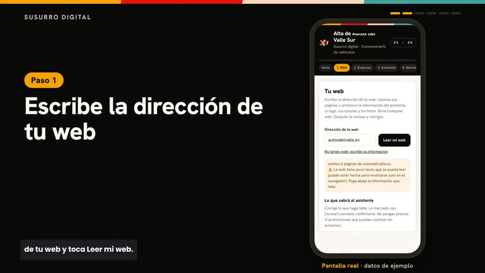
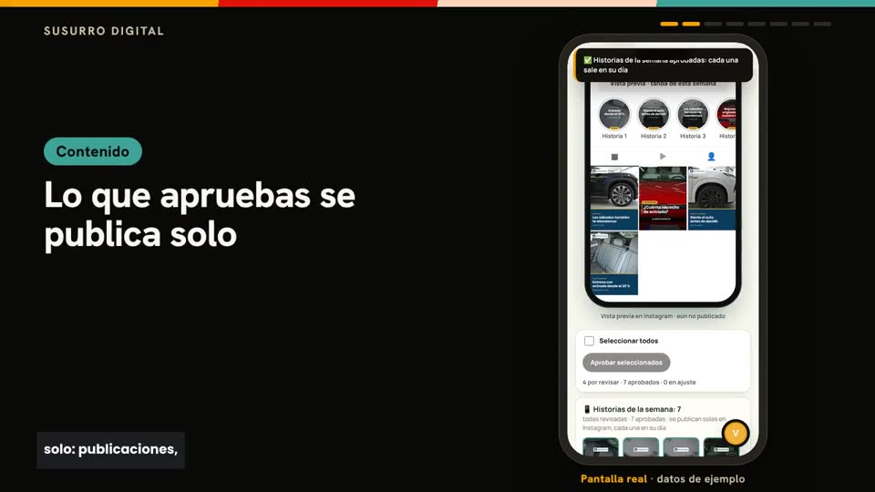

Pega tu web
Leemos tu web y armamos tu marca: logo, colores, tono y productos. ¿No tienes web? Nos lo cuentas en dos minutos.
Digital Whisper atiende a tus clientes en WhatsApp e Instagram, escucha lo que piden y lo convierte en el contenido de tu semana, con tu marca.
Ilustración del panel con datos de ejemplo.

Leemos tu web y armamos tu marca: logo, colores, tono y productos. ¿No tienes web? Nos lo cuentas en dos minutos.

Antes de conectar nada ves piezas con tu marca y una conversación de ejemplo de tu asistente.

Conectas Instagram o WhatsApp con una guía paso a paso y apruebas tu semana. Desde ahí, corre sola.
Responde con la información de tu negocio, en tu tono. Lo que no sabe, lo pasa a una persona.
Cada queja y cada pedido especial se vuelve un caso con área y prioridad. Nada se pierde en un chat.
Publicaciones, carruseles e historias con tus colores, tus fuentes y tu producto. Tú apruebas; se publican solas.
Videos verticales con locución, armados con tus fotos.
Qué preguntan, qué reclaman y qué funcionó, cada semana.
Claude o ChatGPT pueden ver tu panel, aprobar y ayudarte a conectar canales, con los permisos que tú des.
Los casos y los avisos llegan al celular de quien los resuelve.
La aprobaste el domingo. Se publica sola, a su hora.
El asistente responde con tu información. Como falta un dato, abre un caso y avisa a tu equipo.
Tu producto, tus colores, tu texto.
Queda registrada con prioridad y llega al área que la resuelve. Tú la ves en el panel.
Qué preguntaron hoy y qué conviene publicar la próxima semana.
En WhatsApp e Instagram, a cualquier hora, con tus horarios y tus platos.
Qué platos preguntan más y de qué se quejan, por semana.
Piezas con tus fotos, listas para aprobar.
El asistente responde con tu catálogo; lo que no sabe, lo pasa a tu equipo.
Plantillas con tu producto recortado, tus colores y tus fuentes.
Tú apruebas el domingo; la semana se publica sola.
Con área, prioridad y aviso a quien corresponde.
El asistente toma los datos y avisa al asesor.
Lo que más preguntaron esta semana se vuelve publicación.
Respuestas claras, sin prometer lo que no está en tu información.
Toda queja queda registrada y llega al área correcta.
Qué pregunta la gente y cómo cambia mes a mes.
Para empezar a responder y publicar con constancia.
Para marcas que publican todos los días.
Para equipos, varias sedes o mucho volumen.
Los planes se conversan después de la prueba, según lo que necesites.
No. Cada pieza espera tu aprobación. Si quieres, puedes guardar reservas ya aprobadas por ti para que tu cuenta no quede en silencio una semana que no alcanzaste a revisar.
No. El arranque te lleva paso a paso, con enlaces directos a cada pantalla. Si usas Claude o ChatGPT, tu IA te acompaña.
Nadie. Las pegas tú en una ventana protegida, se guardan cifradas y no vuelven a mostrarse. El asistente nunca las pide por chat.
No. Solo usa lo que está en tu información. Un precio, un porcentaje o una fecha que no esté ahí se quita antes de llegar a la imagen.
Sí, en el mismo número.
Sí. Pegas cómo publicas hoy (cuántas piezas, qué días, a qué horas, tus reglas) y armamos tu semana igual para que la revises.
Español e inglés, en el panel y en el asistente.
La prueba es gratuita, sin tarjeta, y tiene fecha de fin. Al terminar eliges un plan; no se borra nada.
Primero pruébalo gratis con tus clientes reales. Los planes se conversan según lo que necesites.
Con tus clientes reales. Sin tarjeta. El acceso es por aprobación: te respondemos por correo.